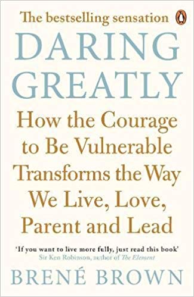
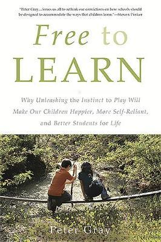
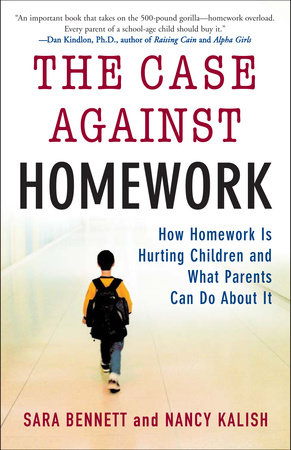
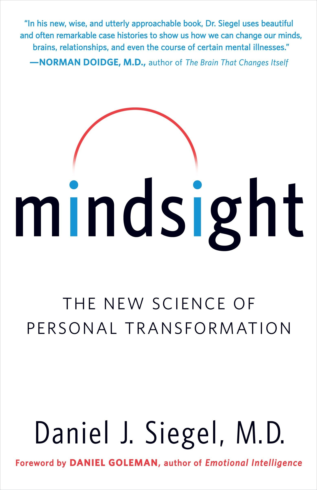
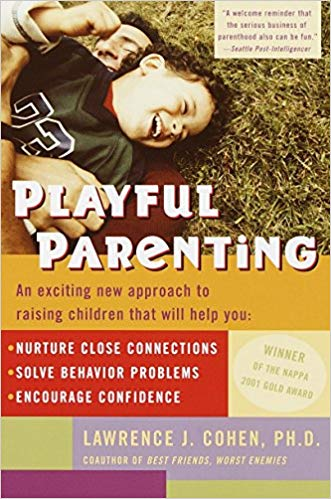
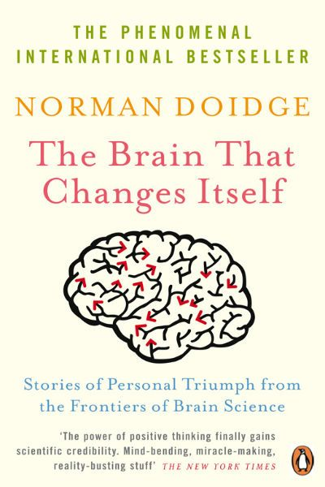
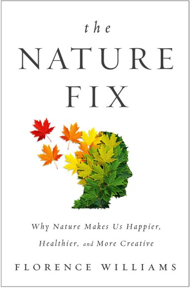
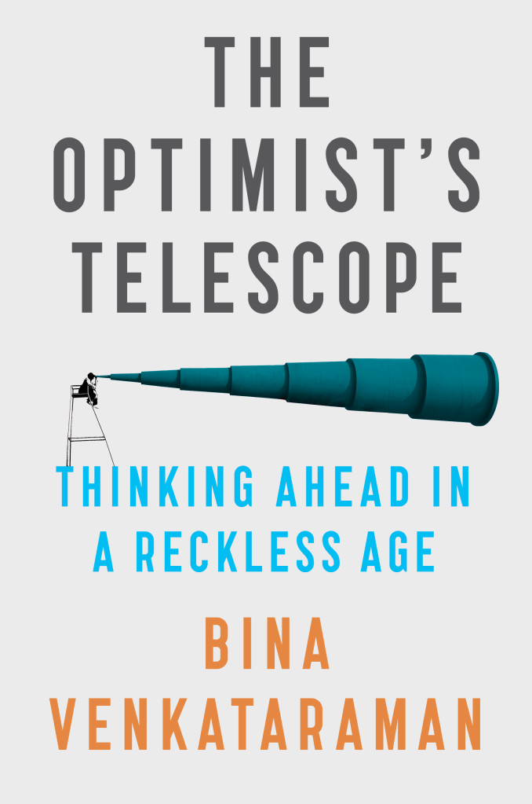
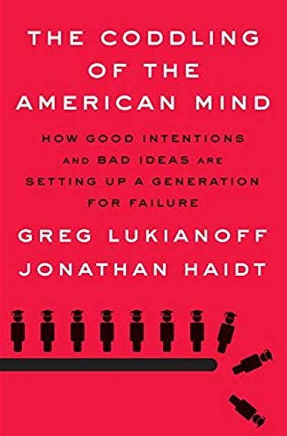

Michael Hempseed
Author
TEDx Speaker
Professional Speaker
Business Owner
Writer
Videos and Books
- Most books are available on www.audible.com
- Nadine Burke Harris
- Dr Burke-Harris gives a brief overview of the Adverse Childhood Experiences Study. She discusses the link between untreated childhood trauma and early mortality.
- Bessel van der Kolk
- A 100 minute summary of his must read book, The Body Keeps the Score: Brain, Mind, and Body in the Healing of Trauma
- Leslie Morgan Steiner
- Why do people stay in abusive relationships
- Ken Clearwater - Male survivor of sexual abuse
- The Power of Vulnerability - Brene Brown
- Geri Puleo - Burnout and PTSD
- Richard Lerner - What helps young people to succeed in life
- Famous Failures
- The new era of positive psychology | Martin Seligman
- iGen: The Smartphone Generation | Jean Twenge
- The Body Keeps the Score:
- Brain, Mind, and Body in the Healing of Trauma
- by Bessel van der Kolk M.D.
- Available from www.kobo.com
- The Deepest Well:
- Healing the Long-Term Effects of Childhood Adversity
- by Nadine Burke Harris M.D.
- Social:
- Why Our Brains Are Wired to Connect
- by Matthew D. Lieberman PhD
- Why We Sleep:
- Unlocking the Power of Sleep and Dreams
- by Matthew Walker PhD
- The Paradox of Choice:
- Why More Is Less
- by Barry Schwartz
- Learned Optimism:
- How to Change Your Mind and Your Life
- by Martin E. P. Seligman PhD
- Daring Greatly:
- How the Courage to Be Vulnerable
- Transforms the Way We Live, Love,
- Parent and Lead 
- by Brene Brown
- Flourish:
- A Visionary New Understanding of Happiness and Well-being
- by Martin E. P. Seligman PhD
- As We Forgive:
- Stories of Reconciliation from Rwanda
- by Catherine Claire Larson
- Building Resilience in Children and Teens:
- Giving Kids Roots and Wings
- by Kenneth R. Ginsburg
- Free to Learn:
- Why Unleashing the Instinct to Play Will Make Our
- Children Happier, More Self-Reliant, and Better
- Students for Life 
- by Peter Gray
- It Didn't Start With You:
- How Inherited Family Trauma Shapes Who We Are
- and How to End the Cycle
- by Mark Wolynn
- The Case Against Homework:
- How Homework Is Hurting Children and What
- Parents Can Do About It 
- by Sarah Bennett and Nancy Kalish
- Mindsight:
- The New Science of Personal Transformation 
- by Daniel J. Siegel, M.D.
- In An Unspoken Voice:
- How the Body Releases Trauma
- And Restores Goodness
- by Peter A. Levine, PhD
- Playful Parenting:
- An Exciting New Approach To Raising
- Children That Will Help You 
- by Lawrence J. Cohen, PhD
- The Brain That Changes Itself:
- Stories of Personal Triumph from the
- Frontiers of Brain Science 
- by Norman Doidge
- The Nature Fix:
- Why Nature Makes Us Happier,
- Healthier, and More Creative 
- by Florence Williams
- The Optimists Telescope:
- Thinking Ahead in a Reckless Age 
- by Bina Venkataraman
- The Coddling Of The American Mind:
- How Good Intentions and Bad Ideas are
- Setting up a Generation for Failure 
- by Greg Lukianoff & Jonathan Haidt
Books and Further Reading